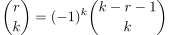
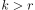
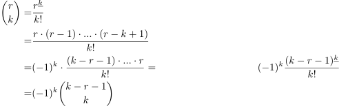
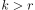

Negationseigenschaft des Binomialkoeffizienten
1. Satz
Für  und k ∈
und k ∈  gilt:
gilt:

1
2. Beweis
Für  sind beide Seiten nach Definition
sind beide Seiten nach Definition 
2.1. natürliche Zahlen
für  sind beide Seiten gleich. Sonst gilt:

2
Für und k ∈ gilt:
Für sind beide Seiten nach Definition
für  sind beide Seiten gleich. Sonst gilt: